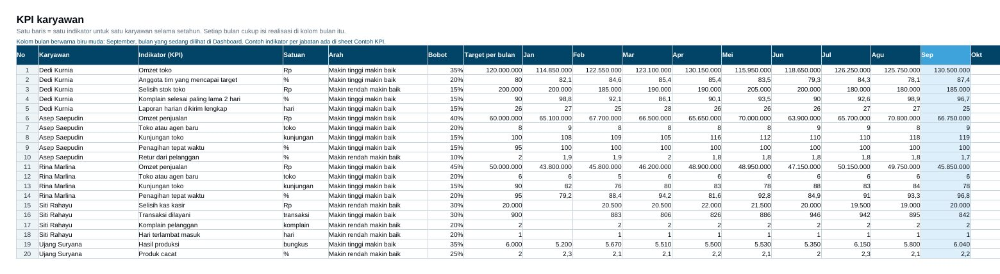
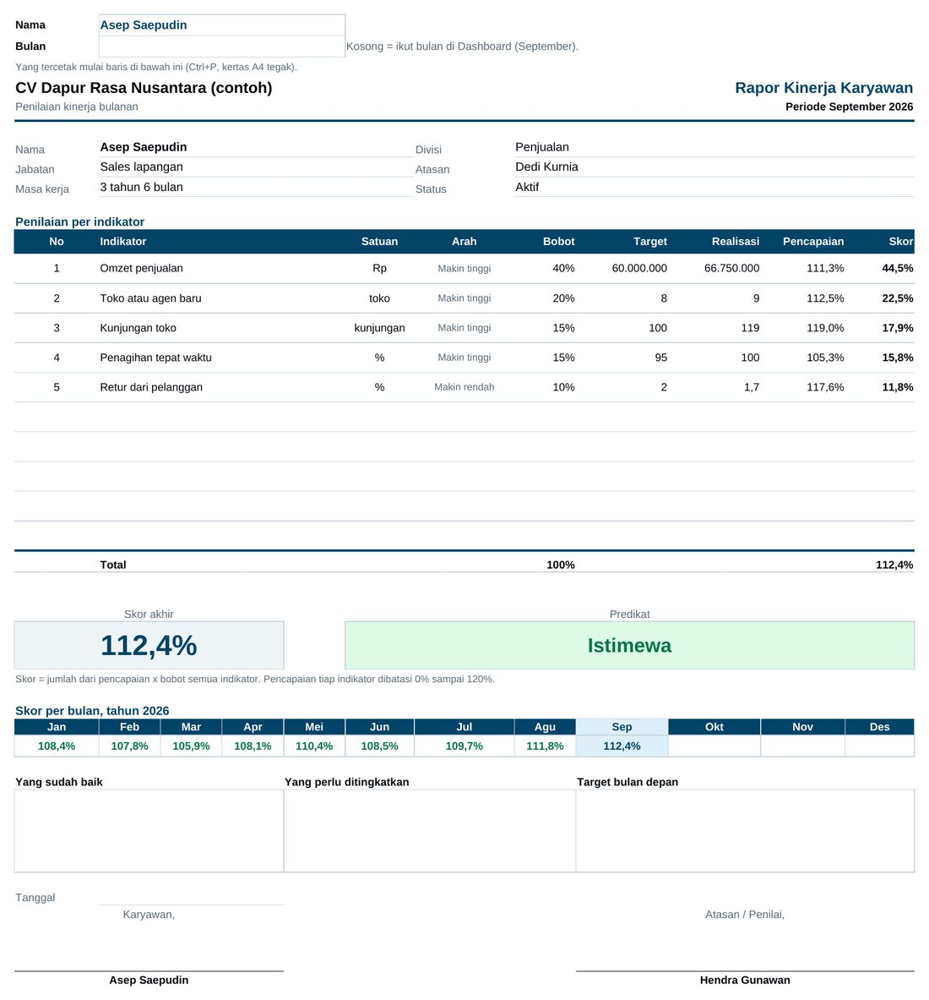
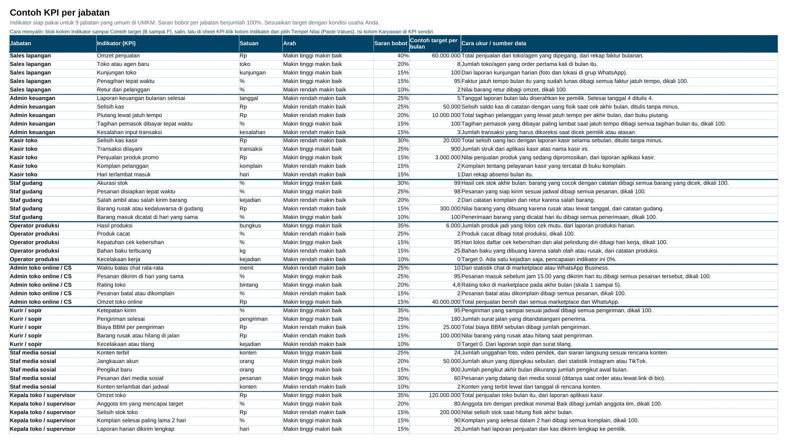

Siapa yang kinerjanya paling baik bulan ini?
Dashboard mengurutkan semua karyawan yang sudah dinilai lengkap, lengkap dengan skor, predikat, dan bonusnya.
Produk digital · Excel & Google Sheets
Nilai kinerja karyawan setiap bulan dengan ukuran yang sama untuk semua orang. Isi satu angka per indikator tiap bulan, lalu skor, predikat, peringkat, rapor, dan bonus terhitung sendiri.
Pembelian lewat WhatsApp. Kami kirim info pembayaran, lalu file dikirim setelah transfer kami terima.
Bayar lewat QRIS, e-wallet, atau transfer bank. File langsung dikirim ke email Anda setelah pembayaran berhasil.

Untuk pertanyaan yang muncul tiap akhir bulan
Dashboard mengurutkan semua karyawan yang sudah dinilai lengkap, lengkap dengan skor, predikat, dan bonusnya.
Rapor merinci setiap indikator: target, realisasi, pencapaian, dan skor, plus skor 12 bulan untuk melihat trennya.
Bonus mengikuti predikat. Persen bonus tiap predikat diatur sekali di Pengaturan, jadi aturannya sama untuk semua.
Isi template
Anda cukup mengisi dua sheet: Karyawan dan KPI. Dashboard dan Rapor terisi otomatis.
Ringkasan satu bulan: berapa karyawan yang sudah dinilai, rata-rata skor, sebaran predikat, rata-rata per divisi, dan grafik setahun. Pilih bulan di bagian atas, atau biarkan kosong untuk bulan terakhir yang sudah diisi.

Pilih nama dan bulan, rapor satu halaman A4 langsung siap dibicarakan dengan karyawan. Ada kolom catatan untuk hal yang sudah baik, yang perlu ditingkatkan, dan target bulan depan, serta tempat tanda tangan.

Bingung indikator apa yang dipakai? Sheet Contoh KPI berisi 45 indikator yang bisa diukur untuk 9 jabatan: sales lapangan, admin keuangan, kasir toko, staf gudang, operator produksi, admin toko online, kurir, staf media sosial, dan kepala toko. Lengkap dengan saran bobot, contoh target, dan cara mengukurnya.

Sebelum membeli
Spesifikasi
Pertanyaan
Klik Beli sekarang untuk chat dengan kami di WhatsApp. Setelah transfer kami terima, file dikirim lewat WhatsApp atau email, sesuai pilihan Anda.
Setelah pembayaran berhasil, link unduhan langsung dikirim ke email yang Anda isi saat checkout.
Bisa dibuka dan diisi lewat aplikasi Google Sheets atau Excel di HP. Untuk mengisi data karyawan dan indikator pertama kali, lebih nyaman di laptop.
Bisa. Indikator, satuan, target, dan bobot Anda tulis sendiri. Sheet Contoh KPI hanya bahan untuk memulai.
Salin file, lalu kosongkan kolom realisasi. Data karyawan dan indikator tidak perlu diketik ulang.
Di file milik Anda sendiri, di laptop atau Google Drive Anda. Vektora tidak bisa melihat isinya.
Hubungi kami di WhatsApp +62 819 9888 8967. Kirim screenshot bagian yang error, kami bantu sampai jalan.
Boleh, selama semuanya usaha Anda sendiri. File tidak boleh dijual ulang atau dibagikan ke orang lain.